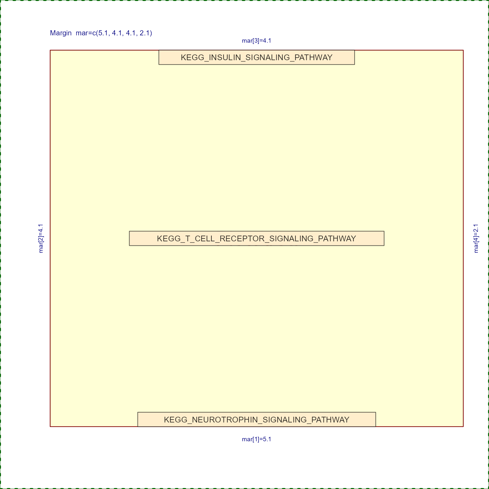

Fix Set labels for legibility
Usage
fixSetLabels(
x,
wrap = TRUE,
width = 40,
maxNchar = Inf,
suffix = "...",
nodeType = c("Set", "Gene", "any"),
do_abbreviations = TRUE,
adjustCase = TRUE,
lowercaseAll = TRUE,
removeGrep = "^(KEGG|PID|REACTOME|BIOCARTA|NABA|SA|SIG|ST|WP|HALLMARK)[_. ]",
words_from = c("als", "ii", "iii", "iv", "v", "vi", "Vii", "Viii", "ix", "x", "trna",
"rrna", "rna", "dna", "mirna", "mrna", "snrna", "snorna", "scrna", "lincrna", "Il",
"Ecm", "Nk", "Pi3k.Akt", "Akt", "Pi3k", "tgf", "nfkb", "NK.Kappa.B",
"Pi3kaktmtorsignaling", "Pi3kaktmtor", "PI3kakt", "aktmtor", "mtorsignaling",
"Pi3kci", "Pi3kgamma", "Pi 3k", "Ppar(alpha|a)", "Ppar(gamma|g)", "Ppar",
"Udp N Acetyl Glucosamine", "Mtor", "Gpcr", "Gpcrs", "Tnfa|Tnfalpha", "Tnfr1",
"Tnfr2", "Tnfs", "Tnf", "Tnfsf", "Tnfrelated",
"Tgf(beta|b)", "Tgfbr",
"TGF Beta", "Akt1", "Igf1akt", "Foxo", "Hdacs", "Hdac", "Hat", "Hats",
"Nicotinic Acetylcholine Receptors|Acetylcholine Nicotinic Receptors", "G CSF",
"Gm Csf", "M Csf", "IL([0-9]+)[-. _]([0-9]+)pathway", "Jak Stat([1-9]*)",
"Mkk3 6pathway", "MAP([23]*)K([0-9]*)", "P38[ ]*MAPK", "MAPK1 3", "Erk MAPK", "Erk",
"Erks", "Interferon([a-z]*)", "([A-Za-z0-9]+[a-qs-z])mediated", "Lncrna|Lincrna",
"Microrna([s]*)", "125 DIHYDROXYVITAMIN D3", "Tweak", "Er", "Vegfavegfr2",
"Vegfr1 2",
"Vegf", "Vegfr([1-9]*)", "Egfr", "Egfrviii", "Egfegfr",
"Smad2 3(pathway|nuclear)", "Smad2 3", "Nf Kb", "Nfkappab", "C Jun", "C Fos", "Ap 1",
"Apoe", "([AG])tpase", "Kras", "Uv", "Sarscov2", "Sars Cov ([12])", "Sars Cov",
"Covid19", "Cellspecific", "([a-zA-Z0-9]+)like", "([TB]|NK) Cell"),
words_to = c("ALS", "II", "III", "IV", "V", "VI", "VII", "VIII", "IX", "X", "tRNA",
"rRNA", "RNA", "DNA", "miRNA", "mRNA", "snRNA", "snoRNA", "scRNA", "lincRNA", "IL",
"ECM", "NK", "PI3K/AKT", "AKT", "PI3K", "TGF", "NFKB", "NFKB",
"PI3K/AKT/mTOR Signaling", "PI3K/AKT/mTOR", "PI3K/AKT", "AKT/mTOR", "mTOR Signaling",
"PI3KCI", "PI3Kgamma", "PI3K", "PPARalpha", "PPARgamma", "PPAR", "UDP-GlcNAc",
"mTOR", "GPCR", "GPCRs", "TNFa", "TNFR1", "TNFR2", "TNFs", "TNF", "TNFSF",
"TNF-related", "TGFbeta", "TGFbeta-Receptor",
"TGFbeta", "AKT1", "IGF1/AKT",
"FOXO", "HDACs", "HDAC", "HAT", "HATs", "Nicotinic Acetylcholine Receptors", "G-CSF",
"GM-CSF", "M-CSF", "IL-\\1/IL-\\2 Pathway", "JAK/STAT\\1", "MKK3/MKK6 Pathway",
"MAP\\1K\\2", "p38-MAPK", "MAPK1/MAPK3", "ERK-MAPK", "ERK", "ERKs", "IFN\\1",
"\\1-Mediated", "lncRNA", "microRNA\\1", "1,25-dihydroxyvitamin D3", "TWEAK",
"ER", "VEGFA/VEGFR2", "VEGFR1/VEGFR2", "VEGF", "VEGFR\\1", "EGFR", "EGFRvIII",
"EGF/EGFR", "Smad2/3 \\1", "Smad2/3", "NFKB", "NFKB", "C-jun", "C-fos",
"AP-1", "APOE", "\\1TPase", "KRAS", "UV", "SARS-CoV-2", "SARS-CoV-\\1",
"SARS-CoV", "COVID19", "Cell-Specific", "\\1-Like", "\\1-cell"),
add_from = NULL,
add_to = NULL,
abbrev_from = c("Extracellular.Matrix", "Mitochondri(um|a|al|on)", "Interferon",
"(IL|Interleukin[ ]*)([0-9]+)", "Subsequent", "Signaling (pathway|system)", "Of The",
"^Signaling by ", " Pathway[s]*$", "Expression", "The Role "),
abbrev_to = c("ECM", "Mito", "IFN", "IL-\\2", "", "Signaling", "Of", "", "", "Expr.",
"Role "),
...
)Arguments
- x
any of the following objects:
charactervectorigraphobject. TheV(g)$nameattribute is used as the input, and the resulting label is then stored asV(g)$label.
- wrap
logicalindicating whether to apply word wrap, based upon the suppliedwidthargument.- width
integer value used when
wrap=TRUE, it is sent tobase::strwrap().- maxNchar
numericvalue orInfto limit the maximum characters allowed for each string. This option is preferred whenwrap=TRUEis not feasible, for example heatmap labels. WhenNULLorInfno limit is applied. Seebase::nchar().- suffix
charactervalue, default"...", used whenmaxNcharis belowInf. When a string is shortened tomaxNchar, thesuffixhelps indicate that there was additional text.- nodeType
characterstring ussed whenxisigraph, to limit changes to nodes by attribute values in"nodeType". Use"any"orNULLto affect all nodes.- do_abbreviations
logical, default TRUE, whether to applyabbrev_from,abbrev_to. These patterns are intended specifically to help shorten a long phrase, possibly removing words, or using common abbreviations.- adjustCase
logical, default TRUE, indicating whether to adjust the uppercase and lowercase lettering by callingjamba::ucfirst(). The default sets all characters to lowercase, then applies uppercase to the first letter of each word.- lowercaseAll
logicalused only whenadjustCase=TRUE, passed tojamba::ucfirst()- removeGrep
characterregular expression pattern used to remove patterns from the resulting label.The default removes common canonical pathway source prefix terms use in MSigDB data, for example KEGG, BIOCARTA, PID, etc. Use
""orNULLto skip this step.Multiple values can be defined, they are applied in order.
- words_from, words_to
charactervectors of pattern, replacement, respectively. The pattern is matched in case-insensitive manner, with case-sensitive replacements where applicable. It uses perl-based regular expression matching withbase::gsub(), so that the expression\\bcan be used to enforce a word boundary, either via delimiter, whitespace, or the end of the string.- add_from, add_to
charactervectors used in addition towords_from,words_to.These values are applied after
words_from,words_to, so that user-defined replacements have priority.
- abbrev_from, abbrev_to
charactervectors used whendo_abbreviations=TRUE. These defaults are "opinionated", they are intended to shorten common phrases which do not seem critical to understanding the meaning of most biological pathways. Some abbreviations are used for relatively common phrases and terms, for which the abbreviation seems to be unambiguous and fairly widely recognized. Examples:"Extracellular Matrix" becomes "ECM"
"Mitochondrial" becomes "Mito"
" Pathway" at the end of a phrase is removed, as it is not required to understand the rest of the label.
"Signaling by " at the start of a phrase is removed, as it also is not typically necessary to understand the label.
- ...
additional arguments are passed to
jamba::ucfirst(x, ...), for examplefirstWordOnly=TRUEwill capitalize only the first word.
Details
This function is a convenient wrapper for several steps that edit gene set and pathways labels to be slightly more legible. It operates on either a character vector, or an igraph object.
To use custom from,to replacements, along with the default replacements, supply the custom replacements with arguments
add_from,add_to.To use custom from,to replacements, without applying the defaults, supply the custom replacements with arguments
words_from,words_to.
See also
Other jam igraph functions:
cnet2df(),
cnet2im(),
cnetplotJam(),
cnetplot_internalJam(),
color_edges_by_nodegroups(),
color_edges_by_nodes(),
color_edges_by_nodes_deprecated(),
color_nodes_by_nodegroups(),
communities2nodegroups(),
drawEllipse(),
edge_bundle_bipartite(),
edge_bundle_nodegroups(),
enrichMapJam(),
flip_edges(),
get_bipartite_nodeset(),
highlight_edges_by_node(),
igraph2pieGraph(),
jam_igraph(),
jam_plot_igraph(),
label_communities(),
layout_with_qfr(),
layout_with_qfrf(),
mem2emap(),
memIM2cnet(),
mem_multienrichplot(),
nodegroups2communities(),
rectifyPiegraph(),
relayout_with_qfr(),
removeIgraphBlanks(),
removeIgraphSinglets(),
reorderIgraphNodes(),
rotate_igraph_layout(),
spread_igraph_labels(),
subgraph_jam(),
subsetCnetIgraph(),
subset_igraph_components(),
sync_igraph_communities(),
with_qfr()
Examples
x <- c("KEGG_INSULIN_SIGNALING_PATHWAY",
"KEGG_T_CELL_RECEPTOR_SIGNALING_PATHWAY",
"KEGG_NEUROTROPHIN_SIGNALING_PATHWAY");
fixSetLabels(x);
#> [1] "Insulin Signaling" "T-cell Receptor Signaling"
#> [3] "Neurotrophin Signaling"
fixSetLabels(x, do_abbreviations=FALSE);
#> [1] "Insulin Signaling Pathway" "T-cell Receptor Signaling Pathway"
#> [3] "Neurotrophin Signaling Pathway"
jamba::nullPlot();
jamba::drawLabels(txt=x,
preset=c("top", "center", "bottom"));
